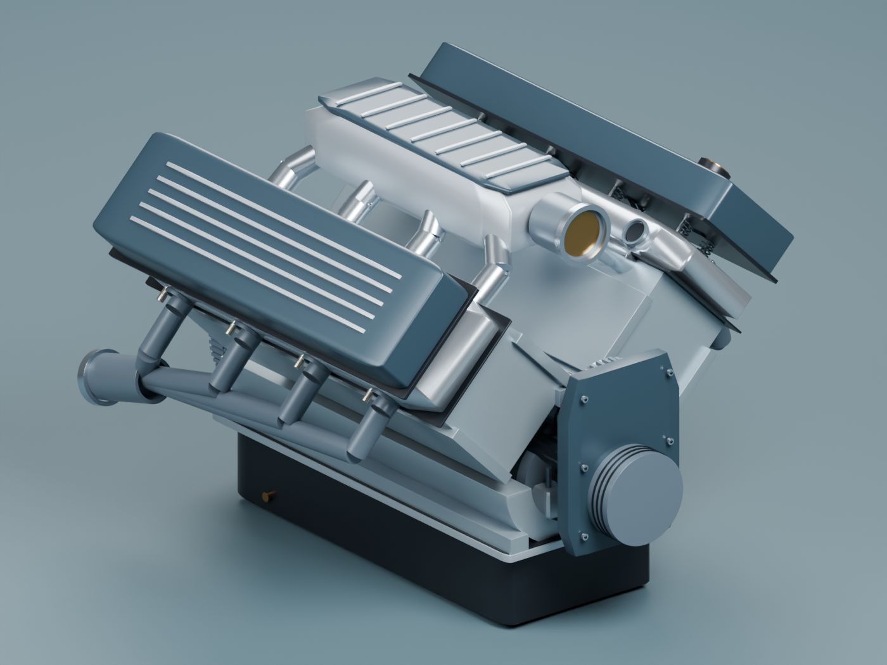
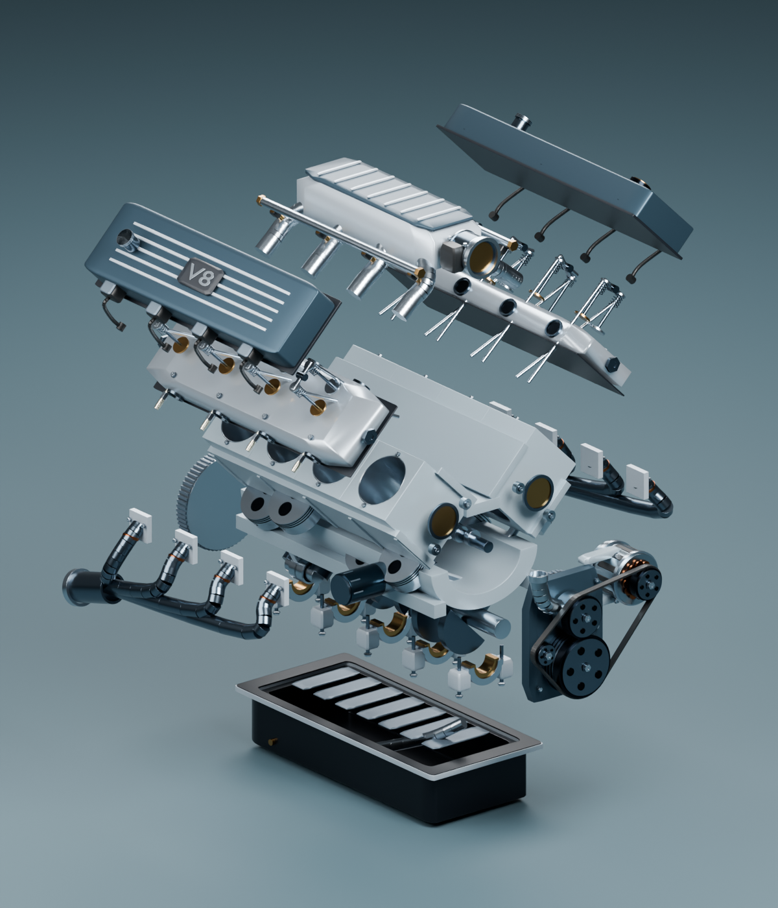

An engine study by Berkay Orhan
Combustion,
made visible.
Build pressure. Move pistons. Hear the exhaust. Explore a V8 whose motion, work, and sound start with equations.
Start exploring ↗Runs in your browser. No install. Sound starts when you choose.

Three ways in
Take it apart. Follow a cycle.
Look around.
Orbit the complete engine, inspect a part, or isolate one of its ten layers.
Open assembled view ↗ 02 / CutawayWatch it work.
Follow the pistons and valve gear. Change the throttle and watch the pressure loop respond.
Open cutaway view ↗ 03 / ExplodedSee every layer.
Separate the heads, covers, bearings, and sump. Adjust the spacing and inspect the structure.
Open exploded view ↗The calculation underneath
The area is the work.
Combustion adds energy to the gas. Expansion turns that energy into piston work. The lab integrates the signed pressure-volume loop, then scales each cycle’s work into indicated power.
A steady-cycle teaching model with prescribed RPM. The numbers are internally checked, but are not calibrated engine measurements.
Read the model & validation ↗- Motion
- Cross-plane crank, slider-crank geometry, half-speed cam
- Thermodynamics
- Ideal gas, Wiebe burn curve, RK4 energy integration
- Sound
- Stereo exhaust banks, pipe resonances and load-dependent growl
- Rendering
- Native WebGL, Canvas, and Web Audio
- Runtime dependencies
- Zero
Hear the engine
13 seconds. Synthesized by the same engine running in the lab.
Driving lab
Hear the next gear.
Calculated 100 to 200 km/h runs, generated by the same vehicle model and audio processor as the interactive lab. Procedural sound with estimated vehicle inputs, not recordings or verified road tests.
Read the model and assumptions. Record your own run with speed, RPM, gear, a trace, the reference pressure loop and engine audio. Compare clips and download them directly from the lab.

Open assembly
The source is yours
to explore.
Open the named collections in Blender, adjust the explosion control, and inspect the geometry. A GLB export is included for other 3D tools.
{kind=link}
{kind=link}
Code, models, and renders are available under the MIT license. Educational geometry, not manufacturing CAD.